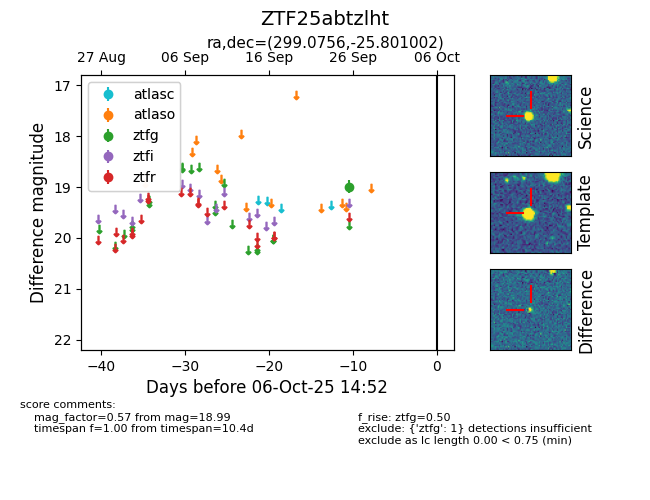

FINK: ZTF25abtzlht
Lasair: ZTF25abtzlht
ALeRCE: ZTF25abtzlht
ZTF25abtzlht (ztf,fink)
equatorial (ra, dec) = (299.0756,-25.80100)
galactic (l, b) = (15.4231,-24.97532)

last ztfg=18.99
1 ztfg detections